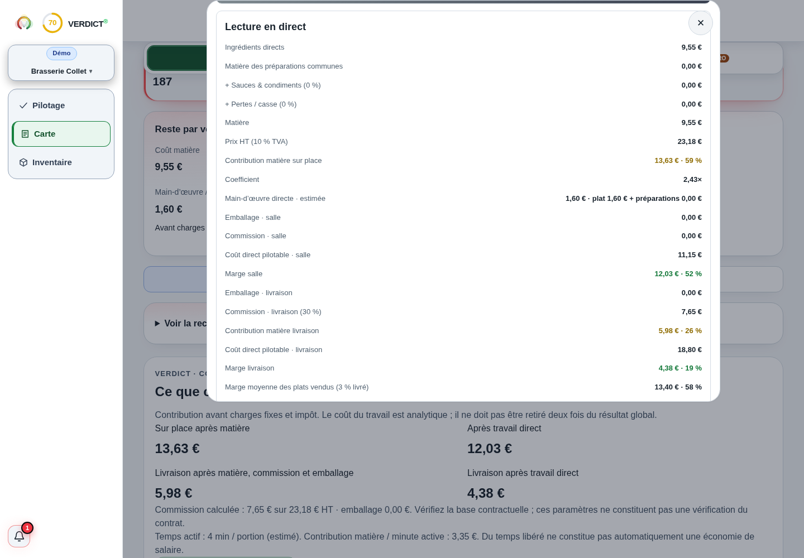

Comprendre le sujet
Prix de revient d’un plat : quels coûts inclure ?
Additionnez les ingrédients réellement utilisés pour un lot, puis divisez par les portions utilisables.
La réponse complète et ses limites
Additionnez les ingrédients réellement utilisés pour un lot, puis divisez par les portions utilisables. Pour élargir le coût, ajoutez le travail et les autres charges que vous attribuez explicitement au lot. Gardez séparés coût matière, coût variable et coût complet : ils ne servent pas à la même décision.
Comprendre
La méthode, en clair.
LES POINTS QUI CHANGENT LA LECTURE
La méthode, en clair.
Des repères à appliquer dans votre établissement. Le détail reste accessible, sans perdre le fil.
Partir du rendement réel
Un kilo acheté n’est pas toujours un kilo servi. Relevez le poids net après préparation, puis le nombre de portions obtenues. Intégrez sauce, garniture, huile et pain s’ils appartiennent au plat. Datez les prix d’achat et les conversions.
Si un lot prévu pour 24 portions n’en donne que 20, son coût unitaire monte même lorsque le fournisseur n’a pas changé son prix. La fiche doit enregistrer le rendement observé, pas seulement la recette théorique.
Attribuer le travail sans compter deux fois
Multipliez le temps retenu par un coût horaire chargé explicite. Précisez si vous répartissez le temps total de production ou seulement le temps supplémentaire. Cette attribution aide à comparer des recettes ; elle ne signifie pas que retirer un plat supprime immédiatement ce salaire.
Une quote-part de loyer ou d’énergie dépend d’une clé choisie : nombre de portions, durée, surface ou autre base. Affichez cette clé. Pour lire ensuite le résultat du restaurant, ne soustrayez pas à nouveau un coût déjà affecté.
Choisir la bonne lecture pour la décision
Le coût matière sert à rapprocher les fiches et l’inventaire. La contribution après coûts variables sert à comparer les ventes. Le coût complet attribué sert à étudier la couverture de tous les moyens engagés ; son résultat dépend du volume et de la répartition retenus.
Calculer
LE LABORATOIRE
Vos hypothèses.
Une lecture immédiate.
Modifiez les données, observez le résultat, puis vérifiez ce que le calcul permet de conclure.
Interpréter
UN SCÉNARIO, JUSQU’AU BOUT
Le calcul, jusqu’au bout
Un lot de 24 portions
Les 6 € comprennent ici matière, travail et 4 € d’autres coûts. Le loyer absent ne devient pas inclus par le simple mot « complet ».
Exemple fictif · hypothèses modifiables
| Matière par portion | 4 € |
|---|---|
| Travail attribué au lot | 44 € |
| Coût retenu par portion | 6 € |
Les montants sont arrondis pour la lecture.
Les calculs gardent leur précision.
Les questions qui restent
Le salaire est-il un coût variable ?
Pas automatiquement. Un coût attribué à une portion peut rester fixe sur la période. Distinguez la répartition du salaire et la dépense réellement évitable.
Dois-je inclure la TVA ?
Gardez une base cohérente. Les exemples utilisent des coûts hors taxes ; une TVA non récupérable doit être traitée selon votre situation avec votre comptable.
Sur quoi repose cette lecture
Les formules et hypothèses sont affichées pour être contrôlées. Les exemples chiffrés sont fictifs et ne constituent pas des statistiques de métier. Les définitions et repères institutionnels utilisés par Verdict sont regroupés dans les sources.
Agir
Votre prochaine action
Mesurez le rendement d’un lot pendant un service, puis mettez à jour sa fiche.
DANS L’APPLICATION VERDICT
Fiche recette : coût connu par portion, prix HT et contribution.

Capture réelle de Verdict — démonstration fictive Brasserie Collet. Lecture détaillée du coût et de la contribution.
Voir l’écran en grand
Lecture en direct
Coefficient
Coût direct pilotable · salle
La contribution de la fiche reste à distinguer du résultat du restaurant après toutes ses charges.
LES CHIFFRES NE VIVENT PAS SÉPARÉMENT.
Reliez cette décision
au reste de votre activité.
Ventes, carte, inventaire : découvrez la lecture proposée par Verdict, avec vos données et vos hypothèses.